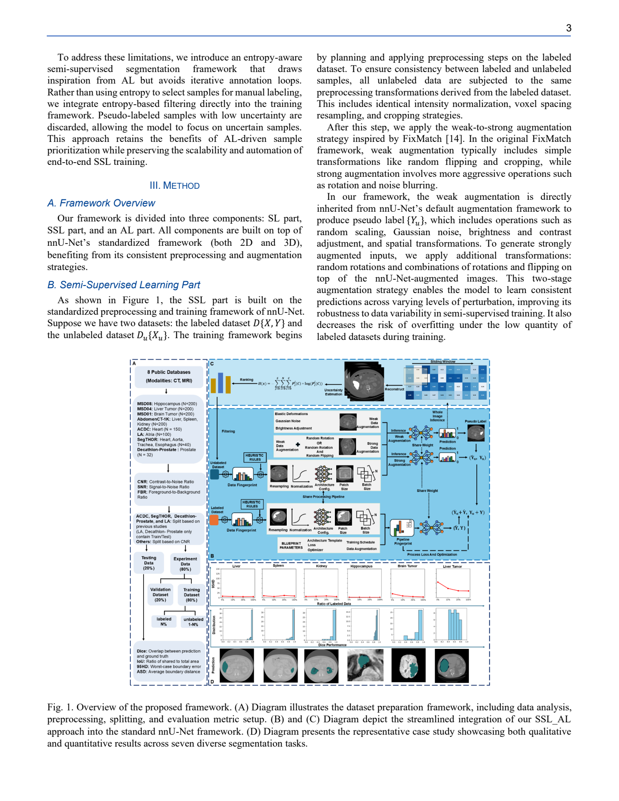

本篇未找到可可靠提取的方法流程图，请查看原文 PDF。
半监督医学图像分割常用伪标签训练无标注数据，但标注稀缺导致伪标签质量差、错误在训练中累积 [p. 1]。作者通过可视化发现，伪标签错误区域与模型预测的高熵区域高度重合，且多位于目标边界 [p. 1-2]。传统做法（如UA-MT）直接丢弃高不确定区域，作者认为这会丢失潜在有价值训练数据，使模型始终回避困难区域 [p. 1-2]。由此提出两个问题：标注数据上如何用精确标签纠正高不确定预测；无标注数据上如何在不传播错误的前提下利用高熵区域信息 [p. 2]。
整体为教师-学生框架：教师网络F_t(θ_t)与学生网络F_s(θ_s)，教师参数由学生参数指数移动平均更新，θ_t=(1-λ)θ_{t-1}+λθ_s，λ=min(t/(t+1),0.99) [p. 4-5, 式10]。
不确定性计算：对输入图像经softmax得到类别概率p，逐像素熵U=p log p（原文式3写作U=plogp，按上下文应为负熵或熵的等价形式；符号解释以原文为准）[p. 4]。用动态百分位阈值μ=Percentile(U,q)生成二值掩码M：U>μ为1，否则为0 [p. 4, 式4]。
URL（标注数据）：教师网络对标注图像预测，计算熵图，取95百分位阈值划分可靠/不可靠区域；用掩码把真实标签分为Y_lc=Y_l⊙(1-M)与Y_luc=Y_l⊙M [p. 4, 式5]。监督损失对不可靠区域给更高权重，对可靠区域给权重α，即L_l=L_seg(P_l,Y_luc⊙M)+αL_seg(P_l,Y_lc⊙(1-M)) [p. 5, 式7]。L_seg为Dice损失与交叉熵的混合 [p. 5]。
CRL（无标注数据）：教师生成伪标签Y_u，同样计算熵掩码M'，但阈值取99百分位，以更精确地定位不确定区域 [p. 5]。伪标签分为Y_uc=Y_u⊙(1-M')与Y_uuc=Y_u⊙M' [p. 5, 式6]。无监督损失降低不确定区域权重：L_u=L_seg(P_u,Y_uc)⊙(1-M')+αL_seg(P_u,Y_uuc)⊙M' [p. 5, 式8]。总损失L_all=L_l+L_u [p. 5, 式9]。
关键设计：标注数据用较低阈值（95%）以广泛覆盖可能出错区域并用真实标签纠正；无标注数据用较高阈值（99%）避免把正确区域误判为不确定区域 [p. 5, 8]。作者称该策略可插拔到不同基线 [p. 2]。
作者主张的贡献有三点：提出基于标注/无标注数据特性差异的双向不确定性感知学习策略；标注数据聚焦高不确定区域、无标注数据聚焦确定区域以稳定训练；方法可即插即用并广泛验证 [p. 2]。我的理解是，核心新颖点在于“对标注数据提高不确定区域权重、对无标注数据降低不确定区域权重”的非对称处理，而非熵本身；与直接丢弃不确定区域的方法形成对照 [p. 2, 10]。
数据集：ACDC共100例，固定划分70训练/10验证/20测试，四类（背景、右心室、左心室、心肌）[p. 5]；LA共100例3D钆增强MRI，两类 [p. 5]；PROMISE12为50例T2加权前列腺MRI，3D转2D切片 [p. 5]。
设置：基线为MT、BCP、ABD；ABD仅用一个教师-学生网络 [p. 6]。α=0.5，NVIDIA 3090，固定随机种子 [p. 6]。2D ACDC与PROMISE12输入裁剪256×256，监督阶段阈值取95百分位、自训练阶段取99百分位；3D LA输入112×112×80，两阶段阈值均取95百分位 [p. 6]。其他设置沿用原方法默认值 [p. 6]。评价指标为Dice、Jaccard、95HD、ASD [p. 5]。
ACDC：5%标注下Ours(ABD) Dice 89.73%、Jaccard 81.92%、95HD 1.86、ASD 0.58；10%标注下Ours(BCP) Dice 90.40%、Jaccard 83.01%、95HD 1.63、ASD 0.41，为表中最佳 [p. 6, 表1]。对比BCP在10%下89.62%、ABD在5%下88.96% [p. 6, 表1]。
LA：5%标注下Ours(MT) Dice 82.88%、Ours(BCP) 89.10%；10%标注下Ours(BCP) Dice 90.40%、Jaccard 83.01%、95HD 1.63、ASD 0.41（表2排版与ACDC表有混排，需以原表为准）[p. 6, 表2]。
PROMISE12：10%标注下Ours(BCP) Dice 85.20%、ASD 1.00；20%标注下Dice 86.01%、ASD 1.04 [p. 7, 表3]。
消融（ACDC 10%，基线BCP）：Base Dice 88.84%；加URL 89.45%；加CRL 90.20%；URL+CRL 90.40% [p. 7, 表4]。区域策略组合中，标注用URL、无标注用CRL最优（90.40%），CRL+CRL为90.10%，CRL+URL为90.28%，URL+URL为90.06% [p. 8, 表5]。阈值组合95%+99%最优（90.40%），95%+95%为90.13%，99%+99%为90.12% [p. 8, 表6]。α=0.5最优（90.40%），α=0.2为90.05%，α=0.7为90.26% [p. 10, 表7]。直接移除不可靠预测区域Dice降至88.56%，不移除为90.40% [p. 10, 表8]。效率上BCP与Ours的FLOPs在ACDC为3.49G/3.53G、LA为6.00G/6.16G，运行时间3.15h/3.52h与9.67h/10.25h [p. 10, 表9]。
支持的结论：在三个数据集、多个标注比例下，URL+CRL相对MT/BCP/ABD有稳定提升；消融支持两模块互补，且“软加权”优于直接丢弃 [p. 7-10]。作者自述局限：阈值依赖固定百分位（95/99），换数据集需重调；权重调整是经验性的“升-降”机制，缺乏细粒度动态调整 [p. 10]。缺失证据：未报告多次运行的均值/方差与显著性检验；未给出伪标签精度等直接指标；部分表格排版混排，个别数字对应条件需谨慎核对；未报告完整训练轮数、优化器细节等。
按原文可复现的步骤：采用教师-学生框架，教师EMA更新，λ=min(t/(t+1),0.99)；对标注数据计算熵并按95百分位生成掩码，对无标注数据按99百分位生成掩码（LA两阶段均95%）；损失为Dice+CE混合，α=0.5；2D输入256×256，3D输入112×112×80；ACDC划分70/10/20；使用NVIDIA 3090与固定随机种子 [p. 4-6]。未报告：具体优化器、学习率、批大小、训练轮数、数据增强、教师预训练细节、多次实验统计 [p. 6]。
本篇未找到可可靠提取的方法流程图，请查看原文 PDF。
论文关注医学图像分割中的跨域半监督域泛化（CD-SSDG）。作者指出，常规SSDG方法通常假设每个源域内都同时存在同分布的标注与无标注数据；但临床中更常见的是：标注数据只来自单一源域，而无标注数据可能来自多个不同分布的中心，且测试域仍未见[p. 1][p. 2]。因此CD-SSDG同时存在两类偏移：标注域与无标注域之间的偏移，以及训练源域与测试目标域之间的偏移[p. 3]。
作者认为现有SSDG方法在该场景下会因域偏移产生不准确的伪标签，尤其在小目标或边界模糊区域；这些噪声伪标签会反过来损害域泛化学习[p. 2]。论文用Fig. 2展示EPL与DAC在不同单源标注域下的伪标签质量对比，但该图仅为示意，正文未给出逐像素量化[p. 2]。
训练集包含K个相似但不同的源域。标注集来自单一源域：S_l1=(X_l,Y_l)，样本数为N_l；无标注集为{S_u1,...,S_uK}，第k域样本数为N_uk。假设边缘分布P_S(X_l)≠P_S(X_uk)，不同无标注域之间也互不相同，但标签空间一致；测试域T的输入分布与所有源域不同，标签空间相同[p. 3]。
DAC包含两个结构相同但初始化不同的子模型，每个子模型由特征提取器F/F̂与分割头H/Ĥ组成；另各加一个辅助头H_loc或H_rot[p. 4]。框架图Fig. 3位于第4页，展示双监督与非对称辅助任务的数据流。
对无标注图像x_oi、x_oj先做风格增强得到x_ai、x_aj，再用CutMix按二值掩码M混合：
其中零值区域大小为βH×βW，β∼U(τ1,τ2)，0<τ1<τ2<1[p. 4]。
交叉伪监督（CPS）：与EPL不同，DAC用原始图像在另一子模型上生成伪标签。对原始图像概率图p_oi、p_oj施加同一掩码M并转硬标签： y = B_σ(p_oi⊙M + p_oj⊙(1−M))，ŷ同理来自另一子模型[p. 5]。
置信度用原始图与增强图预测之间的MSE方差V、V̂衡量，损失为： L_cps = e^(−V)·l_ce(ˆp_o, y) + e^(−V̂)·l_ce(p_o, ŷ) + V + V̂[p. 5]。
跨特征监督（CFS）：要求一个子模型对混合增强输入的特征与另一子模型对混合原始输入的特征一致： L_cfs = l_mse(F̂(x_a), F(x_o)) + l_mse(F(x_a), F̂(x_o))[p. 5]。作者将其解释为软正则，补充伪标签可能遗漏的类别相关细节。
为防模型坍缩并增强判别特征，两个子模型分别承担不同自监督任务[p. 5]：
总损失：L = L_sup + λ_cps·L_cps + λ_cfs·L_cfs + λ_ac·(L_loc+L_rot)，其中L_sup为标注数据的Dice损失[p. 6]。
作者主张的贡献有三点：提出面向CD-SSDG的DAC框架；引入双监督机制与非对称协同训练以缓解训练集内域偏移造成的伪标签噪声；在三个医学分割数据集上验证其优于SSDG基线[p. 2]。
我的解读：核心新颖点在于把“特征级监督”作为伪标签监督的补充，并让两个子模型承担不同自监督任务以保持多样性；这不同于EPL仅用交叉伪监督的对称协同训练。但方法仍建立在EPL式协同训练与CutMix增强之上，属于组合式创新。
每个数据集选一个域为目标域，其余为源域；再从源域中选一个作为标注源域（LSD），按比例抽取标注样本，其余源域图像全部视为无标注[p. 6]。
PyTorch，两块NVIDIA 3090；ResNet50（ImageNet预训练）作特征提取器，DeepLabv3+随机初始化作分割头；AdamW，初始学习率0.0001，权重衰减0.01；α=0.6，τ1=0.2，τ2=0.8[p. 6][p. 7]。各数据集设置：Fundus cs=384×384、bs=8、ep=30、λ_cps=1、λ_cfs=0.05、λ_ac=0.01；Polyp cs=384×384、bs=8、ep=50、λ_cps=0.5、λ_cfs=0.05、λ_ac=0.05；SCGM cs=288×288、bs=8、ep=80、λ_cps=0.5、λ_cfs=0.05、λ_ac=0.05[p. 7]。评估取两个子模型预测的平均；每个配置重复三次，报告均值与标准差[p. 7]。
Fundus（Table I，第7页）：10%标注下，DAC平均DSC为76.35±0.93（Cup）与90.17±0.33（Disc）；20%下为79.06±0.49与90.70±0.24。对应基线EPL在10%为63.38±2.37与89.53±0.21，20%为68.31±0.76与90.11±0.39；BCP在10%为66.04±2.01与82.28±1.25。作者称在更具挑战的视杯任务上，20%与10%标注下平均DSC分别较最佳基线提升+10.75%（vs. EPL）与+10.31%（vs. BCP）[p. 7]。
Polyp（Table II，第8页）：25%标注、LSD=A时，DAC平均DSC 78.87±0.60、IoU 72.04±0.69；EPL为76.00±0.18、68.41±0.25；SOFR为66.03±2.36、57.06±2.31。50%标注、LSD=A时DAC为79.67±0.52、72.89±0.45；LSD=B时为79.10±0.92、72.03±0.77。ACL-Net在25%下平均DSC 76.96、IoU 70.36，作者将其作为上界参考，并指出DAC在域A测试上超过该上界、在域B上接近[p. 8]。
SCGM（Table III，第8页）：20%标注下DAC平均DSC 82.51±0.67，EPL为74.58±3.39，BCP为72.75±3.87，SOFR为62.03±1.60；作者称较此前最佳EPL提升+7.93%[p. 8]。
Table IV（第9页）在Fundus 20%标注、目标域B、三个源域配置上平均：Variant I（仅CPS）Cup 68.48、Disc 86.94、平均77.71；Variant III（加CFS）Cup 74.57、平均80.70；Variant II（仅非对称辅助任务）Cup 76.51、平均81.47；Variant IV（对称H_loc）平均82.04；Variant V（对称H_rot）平均81.32；完整DAC Cup 79.11、Disc 87.70、平均83.40[p. 9]。该表支持CFS与非对称设计各自有效，但表中未给标准差。
超参数：λ_cps、λ_cfs、λ_ac的敏感性见Fig. 11（第9页），作者称视盘稳定、视杯有波动但整体不显著下降[p. 10]。CutMix区域τ2在(0.5,0.9)内变化见Fig. 10（第9页），最终取0.8[p. 9][p. 10]。标注比例从100%降至10%时，SOFR视杯下降12.37%，DAC保持较好[p. 10]。
时间：Table V（第10页）显示DAC训练83分钟、推理57.3 ms；EPL为96分钟、60.1 ms；BCP为498分钟、54.0 ms；SOFR为126分钟、42.5 ms。作者称辅助任务仅在训练期使用，不增加推理复杂度[p. 10]。
支持的结论：在作者设定的CD-SSDG协议下，DAC在三个数据集多个标注比例上的平均DSC优于BCP、SOFR、EPL；消融表支持CFS与非对称辅助任务均有正贡献；训练时间未高于EPL。
局限与缺失证据： - 论文未报告各配置的逐项标准差（仅平均值有标准差），Table IV消融无标准差[p. 7][p. 9]。 - 未给出伪标签质量的定量指标，Fig. 2仅为定性对比[p. 2]。 - 未报告显著性检验；部分配置DAC并非最优（如Fundus 20% Disc上EPL为90.11 vs DAC 90.70，接近；Polyp 50% LSD=B时DAC平均79.10 vs EPL 76.06，但个别域如C上EPL 88.21 vs DAC 88.60接近）[p. 7][p. 8]。 - 失败案例分析（Fig. 14，第10页）仅定性展示血管遮挡与低对比小目标问题，未量化失败率[p. 10]。 - 未报告推理时是否使用两个子模型平均以外的集成策略；作者明确评估用两子模型平均[p. 7]。
已报告：ResNet50+DeepLabv3+、AdamW（lr=1e-4，wd=0.01）、各数据集cs/bs/epoch与λ值、α=0.6、τ1=0.2、τ2=0.8、三次重复取均值[p. 6][p. 7]。
未报告：数据划分的具体随机种子、风格增强的具体实现参数、CutMix掩码生成细节之外的β采样实现、辅助头结构（仅称一个线性层）、是否使用早停或学习率调度、GPU显存与混合精度设置、Polyp中ACL-Net上界的具体训练配置[p. 5][p. 7][p. 8]。这些细节需查阅作者代码或补充材料，正文无法确认。
原论文流程图所在页（完整页面） · Figure 1 · PDF 第 3 页

Fig. 1. Overview of the proposed framework. (A) Diagram illust preprocessing, splitting, and evaluation metric setup. (B) and ( approach into the standard nnU-Net framework. (D) Diagram pr and quantitative results across seven diverse segmentation tasks. 原文来源
医学分割依赖像素级标注，成本高。半监督学习（SSL）可利用无标注数据，主动学习（AL）可挑选信息量大的样本，但二者混合的常见做法是在每轮标注后反复重训，计算开销大、难以临床扩展 [p. 1]。作者还指出，FixMatch/FlexMatch 等单模型方法通常同等对待所有无标注样本，在复杂医学场景下学习效率有限 [p. 1]。因此目标是：在 nnU-Net 内实现一个无需迭代标注循环、自动适配预处理与架构、仅用 5%–20% 标注即可接近或超过全监督性能的单次端到端框架 [p. 1–2]。
整体分三部分：监督学习（SL）、半监督学习（SSL）和受 AL 启发的过滤，全部构建在 nnU-Net 的 2D/3D 标准化框架上 [p. 3]。图 1（第 3 页）给出框架总览：A 为数据准备、预处理、划分与评价指标；B/C 为 SSL_AL 融入 nnU-Net；D 为七个任务的定性与定量案例。注意：图注文字在提供文本中有截断，图像本身未被解析。
SSL 流程：设有标注集 D={X,Y} 与无标注集 Du={Xu}。先仅在标注数据上做 warm-up 监督训练；之后对每个 Xu 先施加弱增广 Tw 得 Xw，再施加强增广 Ts 得 Xs；用模型对 Xw 的 argmax 预测作为伪标签 Yu；最后用强增广视图 Xs 的预测与 Yu 计算损失，并与标注数据联合训练 [p. 3–4, Algorithm 1]。弱增广继承 nnU-Net 默认增强（随机缩放、高斯噪声、亮度/对比度调整、空间变换等），强增广额外加入随机旋转及旋转+翻转组合 [p. 3]。
损失：式(1) 写作 L = L_seg{(Y,Yu),(Y_pred,Yu_pred)}，即把标注与伪标签预测合并为一个 nnU-Net 推荐分割损失，而非 FixMatch 式分开的标注/无标注损失；作者称这样可避免深监督冲突并稳定联合优化 [p. 4]。符号上 Y 为真实标签，Yu 为伪标签，Y_pred 与 Yu_pred 为对应预测。
伪标签生成：不使用 FixMatch 固定的 0.95 置信度阈值，而是对每个像素直接 SoftMax 后 argmax，保留所有像素预测。理由是分割中每像素都是预测点、类别极不平衡，高阈值会滤掉肿瘤边界、小病灶或少数类等有用区域 [p. 4]。
AL 过滤：在预定 epoch E_al 时，用 Shannon 熵 U = −P(x)logP(x) 估计每个无标注样本的不确定性 [p. 4, 式(2)]。与传统 AL 保留高不确定性样本不同，作者采用“反向过滤”：按不确定性排序，丢弃固定比例 n% 的低不确定性伪标签样本，认为这些样本冗余、易导致过拟合与偏见强化 [p. 4]。Algorithm 1 给出流程：warm-up 后每 epoch 生成伪标签并联合训练；当 E=E_al 时估计不确定性并移除 n% 低不确定性样本 [p. 4]。
作者主张三点：一是将 SSL 与 AL 启发的熵过滤统一进 nnU-Net 的端到端自动框架；二是提出无需迭代标注的不确定性过滤策略；三是在 ACDC 低标签设置下取得 SOTA [p. 2]。我的解读：核心工程贡献是把 FixMatch 的弱-强一致性思想与“丢弃低熵样本”的过滤规则嵌入 nnU-Net 单次训练，而非提出新的损失或新的不确定性度量；其“AL”并不查询人工标注，只是训练中自动筛选无标注样本，因此更接近课程/样本选择而非经典 AL。
数据与设置：使用 8 个公开数据集、10 个任务，包括 ACDC、AbdomenCT-1K（肝/脾/肾）、MSD_HepaticVessel（肝肿瘤）、MSD_BrainTumor（全肿瘤）、MSD_Hippocampus、LA、SegTHOR、Decathlon Prostate [p. 4–5]。表 I 报告 CNR/SNR/FBR，用于刻画任务难度 [p. 5]。
ACDC：5% 为 3 例标注、67 例无标注；10% 为 7 例标注、63 例无标注；2D patch 256×256、batch 12；warm-up 分别为 5 和 20 epoch；每 100 epoch 丢弃 15% 低不确定性样本；总训练 300 epoch [p. 6]。SegTHOR：10% 为 3 标注/25 无标注，20% 为 6/22，2D patch 512×512、batch 12 [p. 6]。Prostate：10% 为 2/20，patch 320×320、batch 12 [p. 6]。其他 2D 任务每数据集采样 200 例，5%/10%/20%/100% 分别对应 6/14/28/140 例标注，固定验证 20 例、测试 40 例；AbdomenCT-1K patch 512×512、batch 6，Hippocampus 56×56、batch 48，BrainTumor 192×192、batch 30，肝肿瘤 512×512、batch 6 [p. 6]。LA 3D：patch 16×256×256、batch 2，10% 为 8/72，20% 为 16/64，80 训练/20 测试 [p. 6, p. 11]。
主要结果：ACDC 5% 下本文 Dice 89.56%、IoU 81.63%、95HD 2.39、ASD 0.63；10% 下 90.06%、82.41%、1.46、0.44，均高于表 II 所列 CrossMatch（5%：88.27/80.17/1.53/0.46；10%：89.08/81.44/1.52/0.52）和 CGS 等 [p. 6, Table II]。SegTHOR 10% 下 85.59/76.00/8.21/2.23，20% 下 86.95/77.73/8.68/2.37；Dice/IoU 高于 CGS，但 95HD/ASD 略差于 CGS（10%：6.46/2.05；20%：5.09/1.79）[p. 7, Table III]。Prostate 10% 下 71.62/59.87/6.69/1.68，优于 DiffRect 62.23/48.64/10.36/3.41 [p. 7, Table IV]。LA 3D 10% 下 91.50/84.40/5.78/1.85，略高于 CrossMatch 91.33/84.11/5.29/1.53；20% 下 91.79/84.90/5.58/1.83，Dice/IoU 高于 CrossMatch 91.61/84.57，但 95HD/ASD 略差 [p. 10–11, Table VIII]。
消融：ACDC 表 VI 显示，5% 下 SL 82.96 Dice，SSL 89.51，SSL_AL 89.56；10% 下 SL 86.31，SSL 89.58，SSL_AL 90.06 [p. 9, Table VI]。SegTHOR 表 VII 同样呈 SL<SSL<SSL_AL：10% 下 84.74→85.25→85.59，20% 下 84.85→86.81→86.95 [p. 9, Table VII]。LA 表 IX 报告 10% 下 84.74→85.25→85.59、20% 下 84.85→86.81→86.95 [p. 11, Table IX]；需注意该表数值与 SegTHOR 表 VII 完全相同，文本未解释，存在疑似排版/复制问题。
跨任务：表 V 给出 100%/5%/10%/20% 下六个任务结果。例如肝 97.21/95.89/96.61/96.89，脾 96.33/94.24/94.74/95.28，肾 94.55/92.98/91.21/93.00，海马 90.06/87.29/88.84/89.53，脑全肿瘤 90.17/80.79/86.21/89.49，肝肿瘤 58.11/22.68/37.57/54.64 [p. 7–8, Table V]。作者称脑肿瘤与全监督差距从 5% 的 9.38% 缩小到 20% 的 0.68%，肝肿瘤从 22.68% 提升到 54.64% [p. 9–10]。
其他分析：表 X 显示 ACDC 5% 下 LR/WD 从 0.01/0.00003 改为 0.005/0.003 时 Dice 从 84.28 升至 89.56 [p. 12, Table X]。图 6 比较 SL 与 SSL 平均 epoch 时间，作者称 SSL 通常更慢，但脑肿瘤任务例外 [p. 12]。图 7 显示肝肿瘤在 5%–100% 标注下性能平台化 [p. 12]。
支持的结论：在所列数据集和划分下，SSL 相对 SL 有稳定提升，AL 过滤在 ACDC/SegTHOR 上带来小幅额外提升；ACDC、Prostate、LA 的 Dice/IoU 多数领先。局限与缺失证据：SegTHOR 与 LA 的边界指标（95HD/ASD）并不优于部分基线，作者也承认边界定位略弱 [p. 8–9]；肝肿瘤等小目标性能仍低且随标注增加平台化 [p. 12]。关键未报告项包括：熵过滤的具体实现细节（样本级还是像素级聚合、n% 的完整设置、E_al 的完整设置）、伪标签是否全部保留的消融、过滤比例敏感性、随机种子与重复实验的方差、统计显著性检验。表 IX 与表 VII 数值重复，需谨慎对待。作者还承认受算力限制未穷举配置 [p. 13]。
可复现步骤：使用 nnU-Net 标准预处理（在标注集上规划并应用到无标注集）[p. 3]；按上述各数据集 patch/batch 与划分训练 300 epoch；warm-up 5/20 epoch；每 100 epoch 丢弃 15% 低不确定性样本；弱增广用 nnU-Net 默认增强，强增广加随机旋转与翻转组合；伪标签为弱增广预测的逐像素 argmax；损失为合并标注与伪标签的 nnU-Net 分割损失 [p. 3–4, p. 6]。未报告或无法确认：优化器具体参数、学习率调度、熵计算的具体层级、n% 是否随数据集变化、E_al 的精确值、是否使用 nnU-Net 深监督的完整配置、代码运行环境之外的随机性控制。代码链接为 https://github.com/Ordi117/nnFilterMatch.git [p. 1]。
本篇未找到可可靠提取的方法流程图，请查看原文 PDF。
论文关注少标注条件下的半监督 3D 医学图像分割：仅有少量带标注 3D 体积，同时有大量无标注体积 [p. 1][p. 3]。作者指出，3D 医学分割从零训练通常依赖大量标注，而 2D 自然图像领域已有大规模预训练模型 [p. 1][p. 2]。其初始观察是：在 3D 医学分割任务上，使用 2D 自然图像预训练的模型明显优于同网络从零训练，且标注越少差距越明显；这一证据来自表 1–3 的前三行 [p. 2][p. 7]。因此作者提出：能否把 2D 预训练模型的知识蒸馏给从零训练的 3D 分割模型，并在少标注半监督设置下提升 3D 模型。
与依赖特定网络结构的 2D-to-3D 桥接设计不同，作者强调 M&N 是模型无关框架，可把任意 2D 预训练网络的知识迁移到任意 3D 分割网络 [p. 2]。
给定 3D 图像集 I={I_i}，I_i∈R^{C_i×H×W×D}；其中少量图像 I_L 有掩码 M_L，其余 I_U 无标注，n≪m [p. 3]。目标是利用预训练 2D 模型 f(·;θ_nat) 提升 3D 分割模型 g(·;θ_med)。
第一阶段分别在标注集上微调 2D 模型（沿深度维抽取 2D 切片）并从零训练 3D 模型，二者独立优化标注损失：
L_l = w_ce·L_ce(M̂,M) + w_dice·L_dice(M̂,M) (1)
其中 M̂ 为预测掩码，L_ce 为交叉熵，L_dice 为软 Dice，w_ce 与 w_dice 为权重 [p. 3][p. 4]。
如图 1 所示，两个模型随后在标注集与无标注集上迭代协同训练 [p. 3][p. 4]。
L_u = w_kl·L_kl(M̂,P) + w_dice·L_dice(M̂,P) (4)
其中 L_kl 为 KL 散度损失，w_kl 为其权重 [p. 4]。
L_c = b_l/(b_l+b_u)·L_l + b_u/(b_l+b_u)·L_u (5)
其中 b_l、b_u 分别为 batch 中标注与无标注样本数 [p. 4]。作者加入 L_l 是为了防止仅用 L_u 导致崩溃解（如无论输入都输出相同预测）[p. 4]。
标注集与无标注集规模严重不平衡，固定采样（即使过采样）未必最优 [p. 5]。作者假设：训练早期预测不稳定，应少用伪掩码；训练后期预测更稳定准确，应提高无标注样本比例。该模式与学习率衰减一致，因此按当前学习率 η_current 调整 b_u：
b_u = floor( (η_initial−η_current)/(η_initial−η_final) · B ) (10)
b_l = B − b_u (11)
其中 B 为 batch size，η_initial、η_final 为学习率调度的初值与终值 [p. 5]。
2D 模型可为编码器-解码器结构（替换最后一层匹配类别数）或仅有预训练编码器（追加并微调解码器）[p. 4]。默认微调策略为 LoRA，但也比较全网络微调与仅解码器微调 [p. 4][p. 8]。
作者声称的贡献有三点 [p. 2]：一是提出 2D/3D 模型互相生成伪掩码的迭代协同训练，以及按预测准确性与稳定性自适应调整标注/无标注比例的 LRG-sampling；二是在多个公开数据集、不同少标注设置下优于 13 个现有半监督方法；三是消融表明框架模型无关，可适配不同架构。
我的解读：核心新颖点不在“2D 预训练迁移”本身，而在把 2D 与 3D 模型作为对等协同训练者、以学习率作为无标注数据比例的时间表，并用 batch 级加权损失平衡两部分监督。模型无关性主要由替换 2D 骨干（ResUNet）和 3D 骨干（SwinUNETR）的消融支持，但消融仅在 LA 8 标注一个设置上完成 [p. 8][p. 9]。
表 1（LA，8 标注）：M&N 的 Dice 91.56%、Jaccard 84.47%、HD95 4.59 vox、ASD 1.40 vox；对比方法中 AD-MT 为 90.55/82.79/5.81/1.70，DK-UXNet 为 90.41/82.69/7.32/1.71 [p. 7]。
表 2（LA，4 标注）：M&N 为 90.47/82.66/4.72/1.59；AD-MT 为 89.63/81.28/6.56/1.85，GraphCL 为 88.8/80/7.16/2.1 [p. 7]。
表 3（Pancreas-CT，6 标注）：M&N 为 81.67/69.53/6.56/1.67；AD-MT 为 80.21/67.51/7.18/1.66，Co-BioNet 为 77.89/64.79/8.81/1.39 [p. 7]。注意在 Pancreas-CT 上 M&N 的 ASD（1.67）略高于 AD-MT（1.66）和 Co-BioNet（1.39），因此“所有指标全面最优”的说法在该表并不成立；作者原文称在所有实验/设置中优于现有方法，但表中至少 ASD 并非最优 [p. 7]。
表 1–3 前三行还提供了动机证据：LA 8 标注下 3D UNet 为 88.26 Dice，从零训练 SegFormer 为 83.05，ADE20K 预训练 SegFormer 为 88.61；LA 4 标注下分别为 82.01、71.01、84.23；Pancreas-CT 6 标注下分别为 59.53、43.76、68.57 [p. 7]。这些数字支持“2D 自然图像预训练在少标注下明显有益”，但不同行并非严格同架构对照，解释时需谨慎。
作者还指出，与最佳对比方法 AD-MT 相比，M&N 用 3D UNet 而 AD-MT 用 VNet，两者架构相似，因此性能差异主要归因于学习框架而非网络结构 [p. 7]。这是作者主张，并非严格受控实验。
表 4 在 LA 8 标注上进行 [p. 8][p. 9]：
这些消融支持迭代协同与 LRG-sampling 的有效性，也支持更换骨干后仍具竞争力；但均只在单一数据集、单一标注预算下报告，未给出多数据集或多预算的方差/显著性。
支持的结论：在 LA 4/8 标注与 Pancreas-CT 6 标注设置下，M&N 的 Dice/Jaccard 均高于表中 13 个对比方法；HD95 在三个设置中均为最低（LA 8：4.59；LA 4：4.72；Pancreas：6.56）[p. 7]。消融表明 LRG-sampling 与迭代协同训练对 LA 8 标注性能有实质贡献 [p. 9]。
局限与缺失证据：第一，Pancreas-CT 的 ASD 并非最优（M&N 1.67 vs AD-MT 1.66、Co-BioNet 1.39），与“所有设置全面最优”的表述存在张力 [p. 7]。第二，对比方法的结果来源、是否统一训练预算与骨干、是否使用相同数据增强，正文未说明；表 1–3 只列指标，未给对比方法的实现细节 [p. 7]。第三，消融只在 LA 8 标注上做，未报告 4 标注或 Pancreas-CT 上的组件消融 [p. 8][p. 9]。第四，未报告多次运行的均值/方差或统计检验，无法判断差异显著性。第五，LRG-sampling 依赖学习率调度，若换调度或优化器，式 10 的行为是否仍合适未讨论 [p. 5]。第六，2D 伪掩码由逐切片预测拼接，切片间一致性未单独评估 [p. 4]。
已报告：LA 与 Pancreas-CT 的预处理与划分 [p. 6]；SegFormer-B2（ImageNet-1K+ADE20K）与 3D UNet 默认骨干 [p. 6]；LoRA 默认微调 [p. 4][p. 8]；损失权重均为 1、batch size 5 [p. 6]；500 epoch 预训练/微调（50 warm-up）+3500 epoch 协同训练；余弦权重衰减；2D 学习率 10⁻³、3D 学习率 10⁻⁴、终值 0；AdamW [p. 6]；增强与推理 patch 策略 [p. 6]。
未报告或无法从正文确认：LoRA 的秩、缩放系数与具体注入层；3D UNet 的通道配置；随机种子与运行次数；对比方法是否在同一代码库/相同增强下复现；LRG-sampling 中 floor 后 b_u 的最小/最大值约束；伪掩码是否做置信度过滤或阈值处理；Pancreas-CT 的 patch 采样是否与 LA 完全一致（正文只给统一 160×160×64）[p. 6][p. 8]。这些细节需查代码或补充材料，正文不足以完整复现。
本篇未找到可可靠提取的方法流程图，请查看原文 PDF。
论文针对半监督3D医学图像分割中的两个核心问题：伪标签噪声，以及特征空间监督不足[p. 2]。作者指出，伪标签来自模型当前预测，训练早期因标注数据少而不可靠；分割模型对标签噪声敏感，错误伪标签会污染学习。已有工作分别使用交叉伪监督（CPS）、熵过滤、原型学习或不确定性估计，但作者认为这些技术往往被单独使用或简单拼接，未充分发挥作用[p. 2]。此外，固定置信度阈值在分割中会造成偏置：难类别与前景区域更难获得高置信预测，容易类（含背景）主导伪标签[p. 2]。作者还批评仅监督输出标签空间、缺少特征级判别约束会导致类可分性不足[p. 2]。
总体框架。 两个并行3D编码器—解码器子网：子网A为ResNet34架构，子网B为V-Net架构，参数分别为θ1、θ2[p. 4]。标注集D_l与无标注集D_u同时输入两个子网。总损失为
L = (L_s^A + L_s^B) + λ_c L_c + (L_u^A + L_u^B)，
分别对应有监督项、自监督对比项与半监督项[p. 5]。
有监督损失与一致性正则。 L_s由交叉熵、Dice损失和一致性正则L_cr组成，权重为α：L_s = L_ce(f(x_l;θ), y_l) + Dice(p̂_l, y_l) + α·L_cr[p. 5]。L_cr先用argmax得到两子网伪标签，再构造二值掩码M：当且仅当某一子网预测为目标类且置信度超过阈值λ时置1，否则为0（式5）[p. 6]。随后最小化掩码加权的均方误差‖M·(f(x_l;θ)−y_l)‖²/(M+ε)[p. 6]。其意图是让两子网在“一方高置信、另一方不一致”的区域相互校正。
CCE模块。 由CPS与EFS相加构成：L_cce = L_cps + L_efs[p. 7]。CPS中一个子网的预测作为另一子网的伪标签，双向计算交叉熵：L_cps = L_ce(p_B, ŷ_A) + L_ce(p_A, ŷ_B)[p. 6]。文中提到预测超过置信阈值（例如0.6）赋1、否则赋0[p. 6]，但式7实际写的是argmax，二者表述不完全一致，需注意。EFS对每个体素计算预测熵Ent = −Σ p̂(c) log₂ p̂(c)[p. 7]；若某体素在任一子网熵超过对应阈值τ_A或τ_B，则标为ignore，否则保留argmax伪标签（式10）[p. 7]。阈值取每个模型熵值的第γ百分位。EFS损失为仅在非ignore体素上平均的交叉熵（式11）[p. 7]。
不确定性估计。 作者用KL散度衡量两子网预测差异，并引入温度缩放T_p使伪标签更“果断”：L_p = L_ce(p_A, σ(p_B/T_p))[p. 7]。不确定性损失为L_une = e^{−D_KL}·L_p + D_KL，其中D_KL = p̂_B log(p̂_B/p̂_A)[p. 7]。直观上，两网分歧大（KL大）时降低伪监督项权重，同时保留KL项本身。
原型引导对比学习（PGL）。 可靠性掩码M_i要求两子网argmax一致，且两子网熵均低于批内第γ百分位阈值（式16）[p. 8]。可靠集S_r按类别分为前景子集S_rf与背景子集S_rb，类原型c_f、c_b为可靠体素特征均值（式19）[p. 8]。不确定体素S_u不参与监督损失，而用于对比：L_c = Σ_{S_uf} d(f(v), c_f) + Σ_{S_ub} d(f(v), c_b) + d(c_f, c_b)，d为欧氏距离[p. 8–9]。第三项拉大前景与背景原型距离。
训练流程。 算法1依次计算L_s、L_cps、L_efs、L_une、原型与L_c，并用总损失更新两子网；两子网采用相同Kaiming初始化[p. 8]。
作者声称的贡献有三点[p. 3]：CCE模块协同整合CPS与EFS以抑制噪声伪标签；基于不确定性的动态体素加权；原型对比学习对齐不确定体素与可靠类原型并增强类间分离。我的理解是：CPS与EFS本身并非新概念，论文的新意主要在组合方式、用KL散度同时作为权重与损失项，以及把“可靠/不确定”划分同时用于原型构建和对比学习。作者还强调无需辅助教师网络或额外校正网络[p. 2]，但双网络本身带来约27.30M参数与126.95G MACs（LA设置），高于V-Net的9.44M/47.10G[p. 9]。
数据与预处理。 LA：100例3D MR，各向异性0.625 mm³，零均值单位方差归一化，训练随机裁剪112×112×80，推理滑窗同尺寸、步长18×18×4[p. 9]。Pancreas：82例增强3D CT，强度裁剪[−120, 240] HU，胰腺区域25体素padding，训练裁剪96×96×96，推理滑窗16×16×16[p. 9]。BraTS-2019：335例胶质瘤（259 HGG、76 LGG），四模态，按[17]划分250训练/25验证/60测试，训练随机96×96×96块，推理步长64×64×64[p. 9]。
训练设置。 遵循[13]协议，ResNet与V-Net双流骨干；SGD，动量0.9，权重衰减1×10⁻⁴；初始学习率0.01，每2500步衰减十倍，共6000迭代；每批含标注与无标注数据，batch size为4；对比损失系数λ_c = 0.1×e^{4(1−t/t_max)²}[p. 10]。BraTS延长至20000迭代并使用多项式衰减[p. 10]。硬件为Intel 13900KF、128 GB RAM、NVIDIA L40[p. 10]。指标为Dice、Jaccard、95HD、ASD[p. 10]。
主要结果。 LA 10%标注（8例）：本文Dice 89.95±0.58、Jaccard 81.81±0.95、95HD 5.73±0.63、ASD 1.79±0.24；次优SS-Net为88.82±0.72 Dice，作者称领先1.13% Dice与1.78% Jaccard[p. 9–10]。LA 20%标注：本文90.90±0.54 Dice，低于BCP的91.61±0.44与MC-Net的91.21±0.50，并非最优[p. 9]。Pancreas 10%：本文71.83±4.15 Dice，优于MCF 70.12±3.65与ML-RPL 70.37±2.97；20%：77.07±3.86，略高于UA-MT 77.00±1.96，但低于ML-RPL 76.75？——按表中ML-RPL为76.75±2.47，本文77.07更高；然而ASD 1.73±0.14并非最低（ML-RPL为1.62±0.24）[p. 10]。BraTS 10%：本文84.84±1.45 Dice，作者称超过AC-MT 1.07% Dice；20%：85.76±1.41，超过AC-MT 84.63±1.91[p. 11]。作者也承认在部分半监督设置下未超过对比方法，但计算成本不增加[p. 11]——这一说法与表中27.30M参数高于V-Net不符，应理解为相对某些双网基线。
消融。 表4在10%标注下逐项加入CCE、PGL、UE、CR[p. 11]。全组合在LA为89.95 Dice，Pancreas 71.83，BraTS 84.84；单独组件均有提升。作者称PGL对LA提升明显、对其他两数据有限；UE对LA影响最小，归因于LA较简单[p. 13]。CPS与EFS单独使用均不如CCE组合，且CPS贡献更大[p. 13]。表5比较L_cr中MSE与KL：LA 10%下MSE 89.95 vs KL 89.01 Dice；Pancreas 10%下MSE 71.83 vs KL 26.33 Dice（KL在该设置明显失败）；BraTS 10%下MSE 84.84 vs KL 78.82[p. 13]。表6比较完整对比损失与去掉d(c_f,c_b)项：多数设置完整损失相当或更好，作者称第三项起软约束作用[p. 14]。表7扫描γ∈{10,…,90}：LA最优γ=70（89.95 Dice），Pancreas γ=80（71.83），BraTS γ=30（84.84）；性能在较宽范围相对稳定[p. 14]。图8报告λ=0.6、T_p=0.5、α=0.5（LA/BraTS）或0.6（Pancreas）为最优[p. 14]。
支持的结论：在LA 10%标注下，所提方法在Dice、Jaccard、95HD、ASD上均优于表中对比方法；Pancreas 10%与BraTS 10%/20%的Dice领先有表格数字支撑；消融支持各模块组合有效，MSE优于KL在三个数据集上均有数据。
需要注意的问题：第一，LA 20%设置下本文并非最优（BCP、MC-Net更高），作者“一致最优”的表述过强[p. 9]。第二，Pancreas 20%的ASD与95HD并非最佳，BraTS 20%的ASD也非最低[p. 10–11]。第三，CPS阈值0.6与式7的argmax描述存在不一致，实际实现细节未完全交代[p. 6]。第四，表1–3为文本抽取，部分行存在排版错位，个别数字（如Pancreas 20%的ML-RPL与本文比较）需以原表为准；本文未报告多次随机种子之外的统计检验。第五，作者自述局限：10%标注下ASD仍不理想，计划加入边界惩罚与多尺度特征，并探索Transformer与one-shot设置；当前设计偏重精度而非参数效率[p. 15]。第六，缺少与单网络同参数量的公平比较，双网带来的计算开销未被系统分析。
已报告：双骨干（ResNet34子网A、V-Net子网B）；Kaiming初始化；SGD动量0.9、权重衰减1e−4；初始学习率0.01、每2500步×0.1、6000迭代（BraTS 20000迭代、多项式衰减）；batch size 4；λ_c=0.1×e^{4(1−t/t_max)²}；λ=0.6；T_p=0.5；α=0.5（LA/BraTS）、0.6（Pancreas）；γ=70%（LA）、80%（Pancreas）、30%（BraTS）；数据裁剪与滑窗尺寸如第4节所述[p. 9–10, p. 14]。代码链接在摘要中给出。
未报告或不清楚：CPS中0.6阈值与argmax的实际取舍；L_cr中λ与式5阈值的关系（文中λ同时用于式5与图8，但式2的α才是L_cr权重，符号存在混用）；原型对比损失中不确定体素如何分配前景/背景类别（式20使用S_uf、S_ub，但式17只定义S_u，未说明S_uf/S_ub的划分依据）；温度缩放是否用于所有无标注损失；随机种子数量与方差来源；Pancreas与BraTS的验证集使用方式。复现时需以官方代码为准，上述细节不宜凭文本猜测。